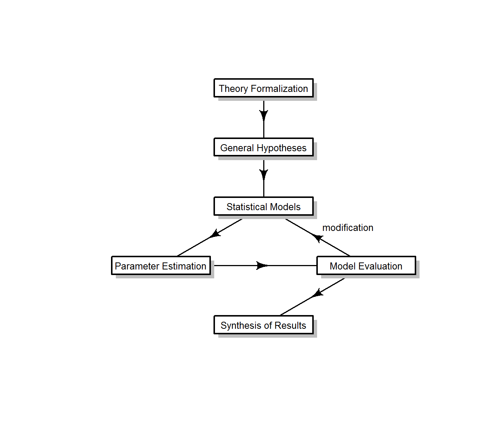
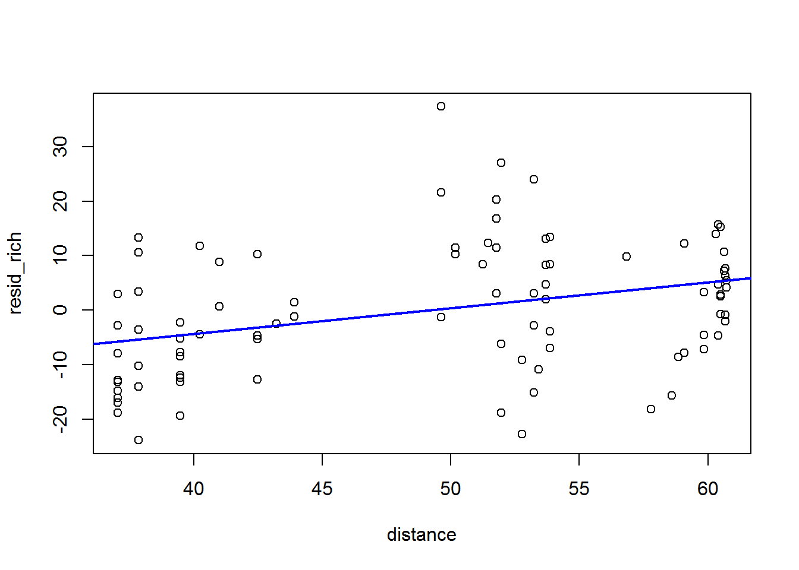
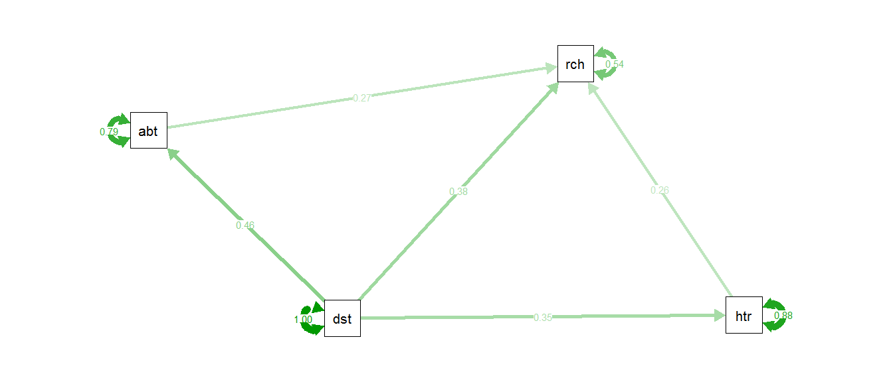
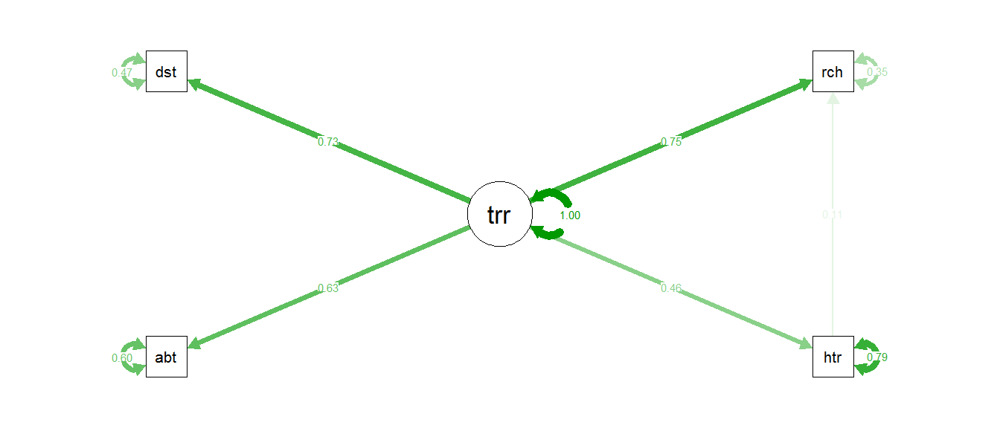

Structural Equation Modeling (SEM) is a framework for representing networks of causal relations. SEM quantifies the direct and indirect relationships between variables in a visual model. This page is designed to introduce the fundamental concepts of SEM, and will work through two examples using R.
Structural Equation Modeling (SEM) is an approach to modeling causal relationships between variables. “Path analysis” models the relationships between measured variables only. More generally, “structural models” investigate causal effects among variables. “Measurement models”, such as confirmatory factor analysis, are used to investigate latent variables and their relationships to measured indictor variables.
SEM is also a framework that describes the process by which causal models are hypothesized, formulated, tested, analyzed, and modified:  Why use SEM? The primary strength of SEM is its ability to quantify causal pathways, including indirect (“mediated”) effects. SEM can incorporate multiple response variables, can investigate the nature of hypothesized latent variables, and can account for repeated measures.
Multiple regression vs. SEM Multiple regression analysis allows for only a single dependent variable, whereas SEM allows for multiple dependent variables. SEM allows for variables to correlate, whereas regression adjusts for other variables in the model. Finally, regression analysis assumes perfect measurement, whereas SEM accounts for measurement error.
What are the limitations of SEM? Distributional assumptions for SEM depend on the method used to estimate associations. For example, maximum likelihood estimation requires that the joint distribution of the endogenous variables is multivariate normal.
For a very concise overview of SEM, see Ricka Stoelting’s webpage.
For more information on assumptions in SEM, see Kline 2012.
Pearl (2012) described SEM “as a causal-inference engine that takes qualitative causal assumptions, data and queries as inputs and produces quantitative causal claims, conditional on the input assumptions, together with data-fitness ratings to well-defined statistical tests.” However, for much of its history, SEM was criticized for its claim to be able to quantify causal relationships. It wasn’t until d-separation was developed (Pearl 1988) that SEM began to gain broad acceptance for its ability to make causal claims. D-separation translates the mathematical expression of causal hypotheses (otherwise known as directed graphs) into probability theory. This translation is what enables the statistical evaluation of the observed data to justify or reject the hypothesized model.
D-separation is used to deduce probabilistic independence upon conditioning in a causal system. The following is a short example explaining how d-separation works. Later, we will use d-separation in our path analysis example in R.
Let us supppose we have the following directed acyclic graph showing the effect of variable A on C, mediated by B:
The first step is to identify all undirected paths in the graph. There is one: (1) A –> B –> C. Next, we will determine whether there is any causal influence along this path. In order to do this, we need to consider two conditions: (1) are there any non-colliding vertices in the conditioning set? and (2) is every collider vertex along the path a member of the conditioning set or has a causal descendant that is a member of the conditioning set? (Colliding vertices are vertices that are inactive, while non-colliding vertices are active in the absence of conditioning.) Let’s write all the d-separation statements we can make from this graph:
| D-separation Statement | Explanation |
|---|---|
| A and C are not unconditionally independent. | There is a directed path between A and C because B is a non-colliding vertex between them. |
| A and C are independent conditioned on B. | B is a non-colliding vertex. When it is conditioned, it blocks the causal pathway between A and C. |
At this point, we can translate these d-separation statements to probability distributions. Remember, we can say that two random variables are independent if the joint probability density is the product of the probability densities of each variable. Similarly, we can say that two random variables are independent given another variable if the joint probability of the two given the third equals the product of the probability density of the first given the third and the probability density of the second given the third. Therefore:
If \(I(X,\phi,Y)\) then \(P(X,Y) = P(X)*P(Y)\), where \(I(X,\phi,Y)\) means that X and Y are independent conditioned on an empty set \(\phi\)
If \(I(X,Z,Y)\) then \(P(X,Y|Z) = P(X|Z)*P(Y|Z)\)
Now, we can write our expected statistical relationships using our observed data. We would expect A and C to be correlated because they are not unconditionally independent. However, when we compare data with B held constant, we would expect no correlation between A and C. Let’s simulate this dataset in R:
#-- Variable A: 1000 observations from a normal distribution with mean 0 and standard deviation 1.
varA <- rnorm(1000, 0, 1)
#-- Variable B: Deterministic function depends on Variable A, plus error (normally distributed with a mean of 0 and standard deviation 1).
varB <- 0.8*varA + rnorm(1000, 0, 1)
#-- Variable C: Deterministic function depends on Variable B, plus error (normally distributed with a mean of 0 and standard deviation 1).
varC <- 0.5*varB + rnorm(1000, 0, 1)We want to test the two d-separation statements we made earlier:
A and C are not unconditionally independent. This means our null hypothesis will be that the Pearson correlation (\(\rho\)) \(= 0\). Then:
#-- Use the "cor" function to find the Pearson correlation between Variable A and Variable C
pearsonR <- cor(varA, varC, method="pearson")
#-- Because our two variables are normally distributed with any relationship between them being linear (we know this because we simulated the data from normal distributions and linear relationships), we can test whether the Pearson correlation coefficient is significantly different from zero using Fisher's Z transform:
z_stat <- .5*(sqrt(1000-3))*log((1+pearsonR)/(1-pearsonR))
#-- The function "pnorm" returns the probability that the observed test statistic is more extreme than the critical value of the standard normal distribution.
pval_manual <- 2*pnorm(-abs(z_stat)) #Multiplying by two and getting the negative of the absolute value of the test statistic gives the two-tailed test.
#-- Another option: use the "cor.test" function to do the test directly:
p_value_function <- cor.test(varA, varC, method="pearson")
pearsonR
pval_manual
p_value_function## [1] 0.5085589
## [1] 3.707821e-70
##
## Pearson's product-moment correlation
##
## data: varA and varC
## t = 18.659, df = 998, p-value < 2.2e-16
## alternative hypothesis: true correlation is not equal to 0
## 95 percent confidence interval:
## 0.4611030 0.5531138
## sample estimates:
## cor
## 0.5085589The p-value is < 0.05. Therefore, we reject the null hypothesis that A and C are unconditionally independent. This result is consistent with our first d-separation statement.
A and C are independent conditioned on B. One way to test for conditional independence is to regress each variable on the conditioning variable, then compare the residuals as we did before for unconditional independence. That would look like this:
resid_varA <- resid(lm(varA~varB)) #The "resid" function extracts the residuals from the linear model.
resid_varC <- resid(lm(varC~varB))
p_value_resid <- cor.test(resid_varA,resid_varC,method="pearson",alternative="two.sided")
p_value_resid##
## Pearson's product-moment correlation
##
## data: resid_varA and resid_varC
## t = -1.7505, df = 998, p-value = 0.08034
## alternative hypothesis: true correlation is not equal to 0
## 95 percent confidence interval:
## -0.116918538 0.006689557
## sample estimates:
## cor
## -0.05532647The p-value is > 0.05. Therefore, we accept the null hypothesis that A and C are conditionally independent given B. This result is consistent with our second d-separation statement. Another way to test for conditional independence is to use the function “pcor” in the ggm library to calculate the partial Pearson correlation from the sample covariance matrix directly:
library(ggm)
#-- First create a data frame
mydata <- data.frame(varA, varC, varB)
#-- Calculate the partial Pearson correlation between Variables A and C, conditioning on B:
partialP <- pcor(c("varA","varC","varB"),var(mydata))
#-- Test for independence (same as before - using Fisher's z-transform):
z_stat <- .5*(sqrt(1000-3))*log((1+partialP)/(1-partialP))
pval <- 2*pnorm(-abs(z_stat))
partialP
pval## [1] -0.05532647
## [1] 0.08033666Again, the p-value is > 0.05.
As you can see, our observed data agree with all of the d-separation statements from our model. This means that we can interpet our model as demonstrating that C is indirectly caused by A, with the effects of A completely mediated by B.
This is a very limited introduction to d-separation and the topic of causality in SEM. For more information, we highly recommend the following: Pearl 2012 and Shipley 2016.
The general form for expressing relationships among observed variables using SEM is:
\[ y=By+\Gamma x+\zeta \] where y is a vector of endogenous variables, x is a vector of exogenous variables, B and \(\Gamma\) are coefficient matrices, and \(\zeta\) is a vector of error variables with non-zero elements for each non-zero element in the y vector on the left side of the equation.
For an example, let us consider the following model:
To express this model in equation form: \[ \begin{align*} \begin{bmatrix} y_1\\ y_2\\ y_3\\ \end{bmatrix} &= \begin{bmatrix} 0 & 0 & 0\\ 0 & 0 & 0\\ \beta_{31} & \beta_{32} & 0\\ \end{bmatrix} \begin{bmatrix} y_1\\ y_2\\ y_3\\ \end{bmatrix} + \begin{bmatrix} \gamma_{11}\\ \gamma_{21}\\ 0\\ \end{bmatrix} \begin{bmatrix} x_1\\ \end{bmatrix} + \begin{bmatrix} \zeta_{1}\\ \zeta_{2}\\ \zeta_{3}\\ \end{bmatrix} \end{align*} \] In this model, \(x_1\) is an exogenous variable, and \(\delta_{1}\) is its error term.
\(y_1\), \(y_2\), and \(y_3\) are endogenous variables, and their error terms are represented by \(\zeta\).
The path coefficients are shown by \(\gamma\) (from exogenous to endogenous variable) and \(\beta\) (from/to endogenous variables).
Latent variables are usually shown in circles rather than rectangles. The path coefficients from a latent variable to its indicator variable(s) are represented by \(\lambda\).
Identification refers to the ability of the model to uniquely estimate parameters. In order for a model to be identified, there must be enough knowns to identify the unknowns. For example, using algebra, if we wanted to estimate two parameters, \(x\) and \(y\), we would need two equations in order to find the unique solution for the pair \((x,y)\). Applying the same principle to our example model above, our known set of parameters are the means, variances, and covariances for the observed variables. Because the unknown parameters, in this case the path coefficients, are functions of the known parameters and can be uniquely estimated, this model is identified.
To know whether a model is underidentified (too few knowns to estimate the unknowns) or overidentified (preferred, because this gives you degrees of freedom for the overall chi-square fit test), you can use the T-rule:
\[ \textrm{number of parameters} \leq \frac{\textrm{number of variables}(\textrm{number of variables} + 1)}{2} \]
In the above model, we have 8 parameters (4 path coefficients + 4 error terms) and 4 variables. This gives us \(8\leq \frac{4(4+1)}{2} \Longrightarrow 8\leq \frac{20}{2} \Longrightarrow 8\leq 10\), therefore this model is overidentified with 2 degrees of freedom.
Certain model structures, complex models, small samples, or high multicollinearity can lead to issues with identification as well. A more thorough treatment of the issue of identification can be found on David Kenny’s webpage.
Path coefficients are estimated from the covariance matrix, although models are usually displayed with correlation coefficients because they are easier to interpret. (Remember: a correlation coefficient is simply the covariance standardized by the standard deviations, and the correlation coefficient takes values from -1 to 1.)
Variables are shown with the standardized regression coefficient (\(r^2\)).
Error terms are shown as \(1-r^2\), or, alternatively the path from the error term to the variable is shown as \(\sqrt{1-r^2}\).
Let’s use our previous example to show how to estimate the parameters of the model:
cor(mydata) #-- Returns the correlation matrix (for displaying the path coefficients)
varB_r2 <- summary(lm(varB~varA))$r.squared #-- Returns the regression coefficient for Variable B.
varC_r2 <- summary(lm(varC~varB))$r.squared #-- Returns the regression coefficient for Variable C.
varB_r2
varC_r2
1-varB_r2 #-- Returns the value for the error term for Variable B.
1-varC_r2 #-- Returns the value for the error term for Variable C.## varA varC varB
## varA 1.0000000 0.5085589 0.8227313
## varC 0.5085589 1.0000000 0.6472725
## varB 0.8227313 0.6472725 1.0000000
## [1] 0.6768867
## [1] 0.4189617
## [1] 0.3231133
## [1] 0.5810383Here is the model with those estimates:
Let’s look at an example from Grace and Keeley 2006:
The goal was to understand patterns in species richness over five years following fire. Parameters were measured in 90 x 1000 \(m^2\) plots. For this exercise, we’ll focus on four measured variables: distance to ocean, abiotic index, spatial heterogeneity, and species richness.
Our preliminary hypothesized model is:
First, read in the data. The dataset “keeley_rawdata.csv” is in the “Files” folder on WebCampus.
keeley <- read.csv("./keeley_rawdata.csv",header=TRUE)
summary(keeley) #-- Look at data## distance elev abiotic age
## Min. :37.04 Min. : 60.0 Min. :32.59 Min. : 3.00
## 1st Qu.:39.46 1st Qu.: 202.5 1st Qu.:43.81 1st Qu.:15.00
## Median :51.77 Median : 400.0 Median :48.04 Median :25.00
## Mean :49.23 Mean : 424.7 Mean :49.24 Mean :25.57
## 3rd Qu.:58.40 3rd Qu.: 630.0 3rd Qu.:54.90 3rd Qu.:35.00
## Max. :60.72 Max. :1225.0 Max. :70.46 Max. :60.00
## hetero firesev cover rich
## Min. :0.3842 Min. :1.200 Min. :0.05558 Min. :15.00
## 1st Qu.:0.6246 1st Qu.:3.700 1st Qu.:0.48769 1st Qu.:37.00
## Median :0.6843 Median :4.300 Median :0.63712 Median :50.00
## Mean :0.6833 Mean :4.565 Mean :0.69123 Mean :49.23
## 3rd Qu.:0.7684 3rd Qu.:5.550 3rd Qu.:0.91468 3rd Qu.:62.00
## Max. :0.8779 Max. :9.200 Max. :1.53541 Max. :85.00Our first step is to perform linear regression for each piece of our hypothesized model. These “piecewise” linear regressions tell us some information about our model variables. We can determine whether individual variables are significant in each regression by looking at the p-values for the parameter estimates. Also, we can find the \(r^2\) values for our endogenous variables from the “lm” function in R.
abioticLM <- lm(abiotic~distance, data=keeley) #-- Abiotic caused by distance
heteroLM <- lm(hetero~distance, data=keeley) #-- Heterogeneity caused by distance
richnessLM <- lm(rich~abiotic+hetero,data=keeley) #-- Richness caused by abiotic and heterogeneity
summary(abioticLM)$coefficients
summary(heteroLM)$coefficients
summary(richnessLM)$coefficients
summary(abioticLM)$r.squared
summary(heteroLM)$r.squared
summary(richnessLM)$r.squared## Estimate Std. Error t value Pr(>|t|)
## (Intercept) 29.5537053 4.11762269 7.177371 2.142310e-10
## distance 0.3998271 0.08233372 4.856176 5.158424e-06
## Estimate Std. Error t value Pr(>|t|)
## (Intercept) 0.461802396 0.065045361 7.099698 3.063408e-10
## distance 0.004499205 0.001300611 3.459300 8.370677e-04
## Estimate Std. Error t value Pr(>|t|)
## (Intercept) -21.6224780 10.0651511 -2.148252 3.447302e-02
## abiotic 0.8135516 0.1746343 4.658602 1.136795e-05
## hetero 45.0702119 11.6796513 3.858866 2.181692e-04
## [1] 0.2113455
## [1] 0.1197074
## [1] 0.3667967Remember, an ANOVA is linear regression. An alternative to looking at the summaries for each “lm” object above is to use the “aov” function to determine whether our three hypothesized linear relationships are significant:
summary(aov(abioticLM))
summary(aov(heteroLM))
summary(aov(richnessLM))## Df Sum Sq Mean Sq F value Pr(>F)
## distance 1 1109 1109 23.58 5.16e-06 ***
## Residuals 88 4139 47
## ---
## Signif. codes: 0 '***' 0.001 '**' 0.01 '*' 0.05 '.' 0.1 ' ' 1
## Df Sum Sq Mean Sq F value Pr(>F)
## distance 1 0.1405 0.14045 11.97 0.000837 ***
## Residuals 88 1.0329 0.01174
## ---
## Signif. codes: 0 '***' 0.001 '**' 0.01 '*' 0.05 '.' 0.1 ' ' 1
## Df Sum Sq Mean Sq F value Pr(>F)
## abiotic 1 5248 5248 35.51 5.28e-08 ***
## hetero 1 2201 2201 14.89 0.000218 ***
## Residuals 87 12859 148
## ---
## Signif. codes: 0 '***' 0.001 '**' 0.01 '*' 0.05 '.' 0.1 ' ' 1Notice that the p-values for significance are the same as above.
Because all variables are significant in our piecewise linear regressions, we will retain all terms in our model.
Our next step is to estimate the parameters in our model. Remember, our parameters are the path coefficients and error terms. We can use the \(r^2\) values from our earlier piecewise linear regressions for our endogenous variables and error terms because we are retaining all of those variables in our model. Now we need to estimate the path coefficients.
In our earlier explanation of path coefficients, we stated that model estimation uses the covariance matrix. However, for display and interpretation, it is usual to standardize the path coefficients by dividing the covariance by the standard deviations. There are two ways to do this in R: you can use the “cor” function to display the correlation matrix for all your variables, and then fill in the values. The other way is to use the “lm.beta” function in the package “QuantPsyc”. This will return the standardized path coefficient(s) directly for individual piecewise linear regressions.
cor_matrix <- cor(keeley[,c(1,3,5,8)]) #-- The [,] is matrix notation in which the (row,column) numbers can be specified. In this case, we're saying to use only the numbered columns of data to calculate the correlation matrix.
cor_matrix
library(QuantPsyc)
lm.beta(abioticLM) #-- Path from "distance" to "abiotic".
lm.beta(heteroLM) #-- Path from "distance" to "hetero".
lm.beta(richnessLM) #-- "abiotic" = path from "abiotic" to "richness"; "hetero" = path from "hetero" to richness.## distance abiotic hetero rich
## distance 1.0000000 0.4597233 0.3459875 0.5844775
## abiotic 0.4597233 1.0000000 0.2766418 0.5083485
## hetero 0.3459875 0.2766418 1.0000000 0.4569914
## rich 0.5844775 0.5083485 0.4569914 1.0000000
## distance
## 0.4597233
## distance
## 0.3459875
## abiotic hetero
## 0.4135769 0.3425788Note that the “lm.beta” function and the “cor” function return the same values.
We will now proceed to fill in our estimates for our model:
In a mediation relationship, there is a direct effect between an independent variable and a dependent variable. There are also indirect effects between an independent variable and a mediator variable, and between a mediator variable and a dependent variable.
The degree to which the direct effect changes as a result of including the mediating variable is referred to as the mediational effect. Testing for mediation involves running a series of regression analyses for all of the causal pathways and some method of estimating a change in direct effect.
In our example, we have two mediations: the effect of “distance” on “richness” is mediated by two mediator variables: “abiotic” and “hetero”. We need to investigate whether these mediations are fully explaining the effect of “distance” on “richness.” One way to determine this is to look at the residuals from the linear regression of “richness” by “abiotic” and “hetero.” The residuals will be the remaining variance in “richness” not explained by “abiotic” and “hetero.” We would expect no structure in the residuals if “abiotic” and “hetero” are fully explaining all effects. However, if we saw a relationship between the residuals and “distance”, we would suspect that there is some effect of “distance” on “richness” that is not being sufficiently explained, or mediated, by “abiotic” and “hetero.” Let’s do this in R:
#-- First we'll extract the residuals from the linear regression of richness by abiotic and hetero.
resid_rich <- resid(richnessLM)
#-- Next, we'll perform a linear regression of these residuals by distance. If this relationship is significant, it would indicate we are missing a path in our model because abiotic and hetero are incomplete mediators.
residLM <- lm(resid_rich~distance,data=keeley)
summary(residLM)$coefficients #-- The relationship is signficant (we could also test this using the "aov" function)
#-- To help visualize this, we'll plot the residuals against distance and show the fitted linear regression.
plot(resid_rich~distance,data=keeley)
abline(residLM,col="blue",lwd=2)
## Estimate Std. Error t value Pr(>|t|)
## (Intercept) -23.2326282 6.8078379 -3.412629 0.0009741965
## distance 0.4718762 0.1361258 3.466472 0.0008176835As distance increases, the values of the residuals increase. Because this relationship is signficant, we conclude that we need to add a path in our model from “distance” to “richness”.
Now, we would need to perform a new regression: lm(rich~abiotic+hetero+distance) in order to estimate the new \(r^2\) for “richness”. For the purposes of this example, we are going to show what would happen if you went directly to testing goodness of fit without investigating mediation. (In the end, the final model chosen will be the same by either process.)
Next, we evaluate goodness of fit. Our first check is to use d-separation to determine whether the observed data adequately account for the modeled probabilities.
Rewording from earlier, the d-separation criterion for any pair of variables involves:
In the context of our model (ignoring the path from “distance” to “richness”), if we wanted to formulate a d-separation statement for the path from “distance” to “richness”:
Thus, we conclude that the residuals for “distance” and “richness” are predicted to be uncorrelated.
Because writing out the entire set of all possible d-statements would involve overlap and would increase the possibility of Type II error, we will identify what is called the “basis set”, which is the minimum number of d=separation statements that is sufficient to predict the entire set of d-separation statements. In this case:
\[ \textrm{distance}\perp \textrm{richness} | (\textrm{abiotic, hetero})\\ \textrm{biotic}\perp \textrm{hetero} | (\textrm{distance}) \] Each of these d-separated statements predicts a (conditional) probabilistic independence:
The composite probability for the basis set is Fisher’s C test: \[ C=-2*\sum_{i=1}^{k}Ln(p_{i}) \] Where \(p_{i}=\) p-values of all tests of conditional independence; C has a chi-square distribution with 2k degrees of freedom; k = number of elements of the basis set.
We conclude that the predicted variables are conditionally independent if \(p>05\). If \(p<.05\), there are likely to be missing paths (in order to account for the lack of independence).
We’ll use some built-in functions in R to determine the fit test:
library(piecewiseSEM)
#-- First, build a model object using the correct syntax:
modList <- list(
lm(abiotic~distance, data=keeley),
lm(hetero~distance,data=keeley),
lm(rich~abiotic+hetero,data=keeley)
)
#-- Next, run the Fisher C test:
sem.fisher.c(modList,data=keeley,.progressBar=FALSE)## fisher.c df p.value
## 1 21.86 4 0Because the p-value < 0.05, we know that the model is missing a pathway. Let’s suppose that pathway is a direct pathway from “distance to ocean” to “richness” (as we concluded from our evaluation of mediation). So, that means our new script will be:
#-- First, build a model object using the correct syntax:
modList2 <- list(
lm(abiotic~distance, data=keeley),
lm(hetero~distance,data=keeley),
lm(rich~abiotic+hetero+distance,data=keeley) #-- note that we've added "distance" as a direct cause of "richness"
)
#-- Next, run the Fisher C test:
sem.fisher.c(modList2,data=keeley,.progressBar=FALSE)## fisher.c df p.value
## 1 3.35 2 0.187Now, our p-value is > 0.05. This means we can conclude our model is supported by our data. We can use the package semPlot to visualize our final model:
library(lavaan)
library(semPlot)
#--First create an object that stores the relationships between the variables:
modList3 <- '
abiotic~distance
hetero~distance
rich~abiotic+hetero+distance
'
#--Next, we need to create a model object that "semPaths" can work with. In this case, we use the "sem" function in the library "lavaan" to create our SEM model object "fullfit1".
fullfit1 <- sem(modList3, data=keeley)
#--Then visualize the model:
semPaths(fullfit1,rotate=1,layout="spring","std")
Note that the “sem” function in the package “lavaan” uses maximum likelihood estimation by default for estimating the model parameters. This compares the modeled covariance matrix to the observed covariance matrix. For path analysis, the ML estimates are likely to be very close to the piecewise estimates we generated earlier using Least Squares from our linear regressions.
Using this model, we would make the following inferences:
What other conclusions might we draw from this model?
Latent variables are variables or constructs that cannot be measured, and so instead we measure “indicator” variables and use those to understand the latent variable. Latent variables may also be called “factors”. They are more commonly encountered in psychology (e.g., “intelligence”) and sociology (e.g., “socioeconomic status”). Reasons to consider latent variables in ecology can include: repeated measures (e.g., point counts on three occasions for estimating “bird density”), multiple samples (e.g., three observers independently counting birds for estimating “bird density”), or multiple methods (e.g., point counts and automated sound recordings for estimating “bird density”).
A latent variable is modeled as the cause of the indicator variables. The correlation among the indicator variables is due to the effect of the latent variable. Error for each indicator variable is due to measurement error plus stray causes.
In SEM, latent variables are shown in circles while measured variables are shown in squares. The model for a latent variable with exogenous indicators is parameterized follows:
The model for a latent variable with endogenous indicators is parameterized as follows:
Issues of identification arise when modeling latent variables because we only know the correlation between our indicator variables but need to estimate path coefficients and the latent variable error. There are options for how to handle this situation: (1) fix the value of the latent variable error to 1 and (if < 3 indicator variables) standardize the indicator measures so that they are given equal weight and the path coeffients are the same, or (2) fix one path coefficient to 1. In practical terms, the choice depends on what units you want for your latent variable. The first option (fixing the latent error variance to 1) has the effect of expressing the scale of the latent variable in units of standard deviations, meaning it acts as a standardised normal variable. The second option essentially states that a one-unit change in the latent variable results in a change in the measured variable by one unit of that measure’s scale.
Let’s work through an example. Suppose that we thought two of the variables in our fire model, “distance to ocean” and “abiotic”, were in fact two measurements of an underlying latent variable that we’ll call “terrain”. Our hypothesized model is as follows:
Now let’s use R to test our model against the data:
#-- First see if the correlations between distance and elevation are strong enough to support the idea of a latent variable:
cor(keeley[,c(1,3)]) #Correlation is fairly high (>.4)
#-- Create the model relationships (#Note the '=~' to signify a latent variable):
modListLatent <- '
terrain =~ abiotic+distance
hetero ~ terrain
rich ~ terrain + hetero
'
#-- We'll use the "sem" function in library "Lavaan" to test whether our model including the latent variable is a good fit:
#-- Note: "std.lv=TRUE" fixes the latent variable variance to 1".
fullfitlatent1 <- sem(modListLatent,data=keeley,std.lv=TRUE)
fullfitlatent1 #-- The p-value for the Fisher's C test is >0.05, meaning the overall fit is good.
#-- Now let's visualize our model:
semPaths(fullfitlatent1,rotation=2,layout="tree2","std",intercepts=FALSE)
## distance abiotic
## distance 1.0000000 0.4597233
## abiotic 0.4597233 1.0000000
## lavaan (0.5-22) converged normally after 67 iterations
##
## Number of observations 90
##
## Estimator ML
## Minimum Function Test Statistic 0.069
## Degrees of freedom 1
## P-value (Chi-square) 0.793Which model is better: the one with the latent variable “terrain” or the one with only the four measured variables? Because our models are not nested, we cannot use the difference between their chi-square statistics to compare the two. Essentially, the final chosen model needs to be based on a strong hypothesized model and theoretical foundation to justify the relationships.
For more information about latent variables, see: Jason Newsom’s webpage and Michael Brannick’s webpage
Structural Equation Modeling seems to have been largely avoided in ecology for much of its history. This may have been due to the misunderstandings surrounding its ability to justify causal relationships or it may have been due to a perceived lack of need for incorporating latent variables into ecological models. However, SEM has become more popular in the last decade and papers reporting SEM are becoming more common.
A growing area of interest is to attempt to translate SEM into predictive probabilistic networks. In other words, how can you move from a SEM describing existing data to a predictive model of phemonema?
For a good (but dense!) look into SEM in ecology, including recent advances, see Grace et al. 2012.
Grace, J. B., and J. E. Keeley. 2006. A structural equation model analysis of postfire plant diversity in California shrublands. Ecological Applications, 16(2), 503-514. Available here.
Grace, J. B., D. R. Schoolmaster Jr., G. R. Guntenspergen, A. M. Little, B. R. Mitchell, K. M. Miller, and E. W. Schweiger. 2012. Guidelines for a graph-theoretic implementation of structural equation modeling. Ecosphere 3(8):73. Available here.
Kline, R. B. 2012. “Assumptions in structural equation modeling.” In Hoyle, R. H. (editor) Handbook of structural equation modeling. New York: Guilford Press. p 111-125.Available here.
Pearl, J. Probabilistic Reasoning in Intelligent Systems. San Mateo: Morgan Kaufmann, 1988.
Pearl, J. 2012. “The causal foundations of structural equation modeling.” In Hoyle, R. H. (editor) Handbook of structural equation modeling. New York: Guilford Press. p 68-91. Available here.
Shipley, B. Cause and Correlation in Biology: A User’s Guide to Path Analysis, Structural Equations and Causal Inference with R. Cambridge: Cambridge University Press, 2016.